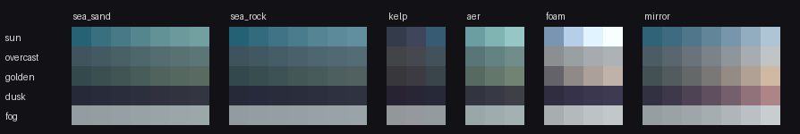
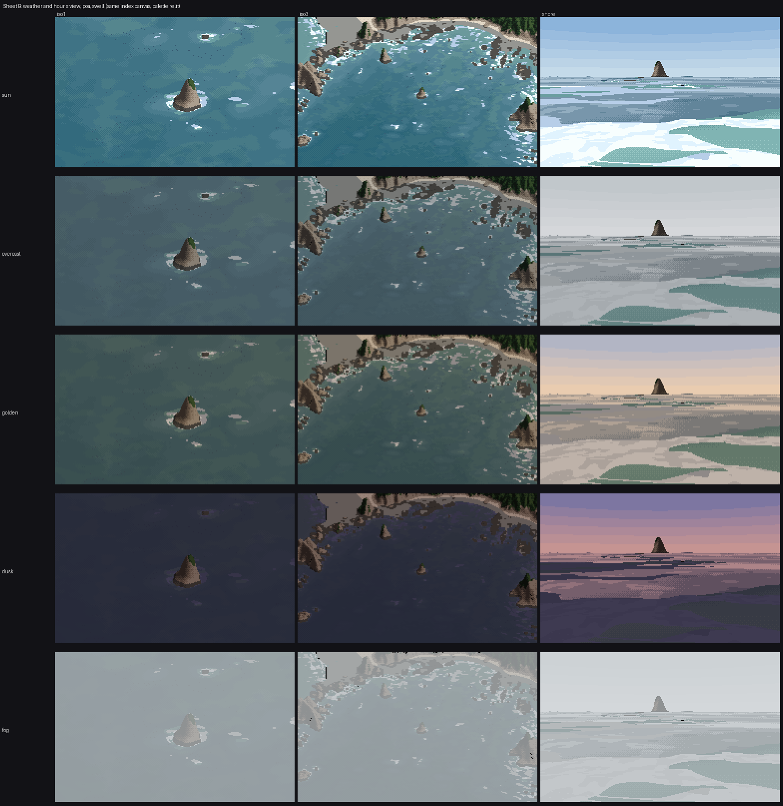

5. The palette is the light
What it's for. It turns one index canvas into sun, overcast, golden hour, dusk and fog, with the sea behaving as the photos say it does. Earlier students established the rule that the palette is the light; this page is how I built the sea's palette from measurements rather than by eye.
Code: code/sea/pal.py (LIGHTS, relight, foam_colours, build).
The rule: body plus mirror
The water study's first rule, which I kept: a water pixel shows light scattered back up out of the water (the body), plus the sky reflected by the surface (the mirror). The body scales with the light falling on the water; the mirror scales with the sky and with the Fresnel reflectance at the view angle, about 6% at voxsim's 30°. So:
colour = body × irradiance × sun tint + F_eff × sky (in linear RGB)
The measurements in how-to 1 are the sum, taken in one light state: sun, 14:30, August. So I subtract that state's sky reflection to recover the body, and relight:
def relight(lab_sun, L):
"""sun-state measured colour -> this light state."""
ref = LIGHTS['sun']
lin = lab2lin(lab_sun)
sky_s = lab2lin(ref['sky']) * ref['Feff']
body = np.maximum(lin - sky_s, 0) # remove the sunny sky reflection
out = body * L['E'] * np.array(L['tint']) + lab2lin(L['sky']) * L['Feff']
if L['haze']:
hc, ha = L['haze']; out = out * (1 - ha) + lab2lin(hc) * ha
return out
The anchors are measured, and the one fitted number is the depth scale:
SEA_DEEP = (36, -13, -17)
SEA_SAND_SHALLOW = (64, -15, -5)
SEA_ROCK_SHALLOW = (58, -11, -13)
D0 = 8.0 # m: e-folding depth of the bottom's contribution
def sea_body_lab(d, rock):
w = 1 - np.exp(-np.asarray(d, float) / D0)
sh = np.array(SEA_SAND_SHALLOW) * (1 - rock) + np.array(SEA_ROCK_SHALLOW) * rock
return sh * (1 - w) + np.array(SEA_DEEP) * w
Each band's colour is sea_body_lab at that band's representative depth (18, 10, 6.5, 4, 2.2, 1.1 and 0.4 m).
The five states
LIGHTS = {
'sun': dict(E=1.00, tint=(1.0, 1.0, 1.0), sky=(72, -4, -24), Feff=0.06, ..., direct=0.75),
'overcast': dict(E=0.40, tint=(0.97, 1.0, 1.03), sky=(80, -1, -3), Feff=0.09, ..., direct=0.0),
'golden': dict(E=0.42, tint=(1.10, 0.86, 0.62), sky=(74, 2, -8), Feff=0.07, ..., direct=0.8),
'dusk': dict(E=0.10, tint=(1.0, 0.62, 0.62), sky=(52, 12, -22), Feff=0.09, ..., direct=0.0),
'fog': dict(E=0.45, ..., sky=(84, -1, -2), Feff=0.10, ..., haze=((82, -1, -2), 0.45)),
}
F_eff rises under flat light, because a rough surface under a bright, even sky mirrors more of it. These numbers are my reading, not measurements: I had sunny obliques to measure and only ground photos for the other states. The photographic facts behind them:
- Morning against the sun. The 2002 set, flown at 10:40 looking west into a cove, has no colour at all, just silver glitter cut by dark ripple lines. Sun glitter follows Cox and Munk (1954): facet slope variance σ² = 0.003 + 0.00512 U. The painter marks glints where the facet that would mirror the sun into the eye lies within about one σ of flat.

- Overcast and fog (ground photos,
refs/ground/): the sea turns into the sky's grey, depth barely reads, and foam is only a little lighter than the water.
Foam is lit separately: an ambient term from the sky, plus the sun's direct light on lit lumps. With no direct light, foam collapses to four close steps under the sky colour. That's why the overcast foam in the sheet has no lit side:
if L['direct'] == 0: # flat light: foam is the brightest thing, but only slightly above grey
base = FOAM_ALBEDO * (lab2lin(L['sky']) * 0.95) * max(L['E'] / 0.4, 0.3)
cols = [base * 0.62, base * 0.78, base * 0.92, base * 1.0]

figs.py ramps: every sea ramp in every light state. Seven depth steps each for sand and rock, three kelp, three jade pool, four foam, and the eye-level mirror ramp.
The sheet

Sheet B, Point of the Arches, swell. Each column is one index canvas; only the palette changes between rows. The second critic judged sun, overcast and fog believable in both iso columns. Golden read as "a green-grey tint", and dusk "loses all the foam". Both are fair. At dusk the foam's lit side has no sun to show, so foam and water land within a couple of L* of each other. I had no dusk photo of this coast to check against, so this part is my reading: foam at dusk should stay a clear step above the water, because its facets mirror the bright western sky. The next thing I'd try is a sky-mirror term for foam, not just ambient light.
The eye-level column is weakest in every row; how-to 6 says why.